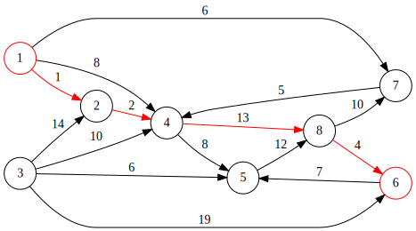

最短路径之线性规划求解法¶
什么是线性规划¶
线性规划（Linear Programming，简称 LP），指的是这样一类数学问题及其解决方法： 在 线性约束条件 下求 线性目标函数 的最优解（极大值/极小值）。
线性规划问题可以用下面的标准形式来描述：
目标函数和约束函数用矩阵可以简化表示为 : \(c^Tx\) 和 \(Ax\) 。
线性规划有通用解题算法，一个问题如果如果可以归纳为一个线性规划问题，那么就可以用线性规划工具包（比如 GLPK）提供的通用求解器来解决。
问题定义¶
要使用线性规划方法来求解最短路径问题，需要先用线性规划的方法将最短路径问题定义出来。
令 \(x_{ij}\) 表示节点 \(i\) 到节点 \(j\) 的路径是否被选择，如果被选择则 \(x_{ij} = 1\)，否则 \(x_{ij} = 0\) ， \(c_{ij}\) 表示节点 \(i\) 到节点 \(j\) 的路径长度，\(s\) 和 \(t\) 分别表示起点和终点。
则最短路径可以描述为：
其中第二个约束条件约束了所有路径连起来必须构成一条起点 \(s\) 到终点 \(t\) 的路径。用白话来翻译这个公式就是， 汇入某个顶点的路径条数减去从这个顶点出发的路径条数 这个值只能有 3 种情况：
起点，为 \(-1\)，因为只有从起点出发的路径。
终点，为 \(1\)，因为只有路径汇入终点。
其他点，为 \(0\)，要么不在路径上，如果在路径上，有汇入的路径，就得有对应的从点出发的路径，两者数量相抵消。
如果没有这个约束，那么显然所有 \(x_{ij}\) 都取 0 的时候目标函数值最小，不符合需求。
使用 GLPK 求解¶
GLPK 是一个开源的线性规划工具包，包中提供了一些通用的线性规划问题求解器（Solver）。
使用 GLPK 求解问题第一步，把上面的数学公式翻译成 MathProg 语言。
param n, integer, > 0;
/* 定义有 n 个顶点 */
set E, within {i in 1..n, j in 1..n};
/* 定义路径，E_{i,j} 为从点 i 到点 j 的边 */
param c{(i,j) in E};
/* 定义路径的长度 */
param s, in {1..n};
param t, in {1..n};
/* 定义起点和终点 */
var x{(i,j) in E}, >= 0;
/* 定义 x[i,j] 的取值范围，要么在路径上为 1，要么不在路径上为 0
下面约束路径的条件蕴含了 x[i,j] 的上限，所以这里没有限定 */
s.t. r{i in 1..n}: sum{(j,i) in E} x[j,i] + (if i = s then 1) =
sum{(i,j) in E} x[i,j] + (if i = t then 1);
/* 约束成路径，s.t. 是 subject to，英文里约束条件的意思 */
minimize Z: sum{(i,j) in E} c[i,j] * x[i,j];
/* 定义目标函数 */
/* 数据 */
data;
param n := 8;
param s := 1;
param t := 6;
param : E : c :=
1 2 1
1 4 8
1 7 6
2 4 2
3 2 14
3 4 10
3 5 6
3 6 19
4 5 8
4 8 13
5 8 12
6 5 7
7 4 5
8 6 4
8 7 10;
end;
/* 最优解为路径: s = 1 -> 2 -> 4 -> 8 -> 6 = t
上面都是有向的边，如果是无向图，需要将上面的边逆转过来再指定一遍长度
可以试下，有向图和无向图计算出的结果会不一样。
参考：https://github.com/firedrakeproject/glpk/blob/master/examples/spp.mod */
保存代码到 spp.mod 文件，求解问题第二步，调用 GLPK 的求解器解这个问题。
# glpsol -m spp.mod -o result.txt
...
GLPK Simplex Optimizer, v4.52
...
# cat result.txt
...
No. Column name St Activity Lower bound Upper bound Marginal
------ ------------ -- ------------- ------------- ------------- -------------
1 x[1,2] B 1 0
2 x[1,4] NL 0 0 5
3 x[1,7] B 0 0
4 x[3,2] NL 0 0 29
5 x[2,4] B 1 0
6 x[3,4] NL 0 0 23
7 x[3,5] NL 0 0 18
8 x[3,6] NL 0 0 15
9 x[7,4] NL 0 0 8
10 x[4,5] NL 0 0 7
11 x[4,8] B 1 0
12 x[6,5] NL 0 0 23
13 x[5,8] B 0 0
14 x[8,6] B 1 0
15 x[8,7] NL 0 0 20
...
Activity 这一列就是解，遍历所有的 \(x_{ij}\) ，根据选择的路径组合就能得到最短路径。
GLPK 默认使用 单纯形法 Simplex 来求解，也可以通过命令行参数选择其他算法，这一类通用算法的性能肯定比不上 Dijkstra/Yen 等专用算法。但是使用线性规划可以通过约束条件实现更复杂的路径需求，比如要求必须通过某条路径、带宽约束等复杂需求。
CPLEX LP¶
MathProg 是 GLPK 提供的高级建模工具，GLPK 还可以通过 CPLEX LP 这个底层格式来描述问题。
glpsol 可以直接将上面的 MathProg 程序翻译成 GPLEX LP 格式：
# glpsol -m spp.mod --wlp spp.lp
...
# cat spp.lp
Minimize
Z: + x(1,2) + 8 x(1,4) + 6 x(1,7) + 14 x(3,2) + 2 x(2,4) + 10 x(3,4)
+ 6 x(3,5) + 19 x(3,6) + 5 x(7,4) + 8 x(4,5) + 13 x(4,8) + 7 x(6,5)
+ 12 x(5,8) + 4 x(8,6) + 10 x(8,7)
Subject To
r(1): - x(1,2) - x(1,4) - x(1,7) = -1
r(2): + x(1,2) + x(3,2) - x(2,4) = -0
r(3): - x(3,2) - x(3,4) - x(3,5) - x(3,6) = -0
r(4): + x(1,4) + x(2,4) + x(3,4) + x(7,4) - x(4,5) - x(4,8) = -0
r(5): + x(3,5) + x(4,5) + x(6,5) - x(5,8) = -0
r(6): + x(3,6) - x(6,5) + x(8,6) = 1
r(7): + x(1,7) - x(7,4) + x(8,7) = -0
r(8): + x(4,8) + x(5,8) - x(8,6) - x(8,7) = -0
End
约束条件里省略了系数为 0 的变量，如果补全就是一个矩阵，矩阵每行代表一个约束条件，每列代表一个变量。在最短路径问题中，行数等于顶点个数，列数等于可选路径个数，注意路径是有向的，\(E[1,2]\) 列代表顶点 1 到顶点 2 的路径，\(E[2,1]\) 代表顶点 2 到顶点 1 的路径，虽然它们是同一条路。
第 i 行 j 列的参数 \(a_{ij}\) 的取值规则为：如果第 j 列对应的路径是从第 i 个节点出去，值为 -1，如果是汇入，值为 1，其它为 0 。
GLPK 底层 API¶
从上面 GPLEX LP 格式可以看出，描述一个线性规划的问题核心就是约束系数矩阵，一行对应一个约束条件，一列对应一个变量，其他都可以映射到行、列关联的属性上去。
GLPK 的底层接口就是就是围绕约束系数矩阵来构建的。来看一个具体的栗子：
glp_prob *lp = glp_create_prob();
glp_set_prob_name(lp, "shortest path");
// 设置算极小值
glp_set_obj_dir(lp, GLP_MIN);
// 8 个顶点，8 个约束条件，8 行
glp_add_rows(lp, 8);
glp_set_row_name(lp, 1, "r1");
// 设置每一个约束条件的取值范围
glp_set_row_bnds(lp, 1, GLP_FX, -1.0, -1.0);
glp_set_row_name(lp, 2, "r2");
glp_set_row_bnds(lp, 2, GLP_FX, 0.0, 0.0);
...
// 15 条路径，15 列，对应目标函数中 15 个变量，变量和列是一一对应的
glp_add_cols(lp, 30);
// 设置第一列
glp_set_col_name(lp, 1, "x1,2");
// 设置变量的取值范围
glp_set_col_bnds(lp, 1, GLP_LO, 0.0, 0.0);
// 设置目标函数中对应变量前面的参数，也叫代价系数
glp_set_obj_coef(lp, 1, 1.0);
// 添加第二列
glp_set_col_name(lp, 2, "x1,4");
glp_set_col_bnds(lp, 2, GLP_LO, 0.0, 0.0);
glp_set_obj_coef(lp, 2, 8.0);
...
// 设置约束系数矩阵，这个形式主要是为了方便稀疏矩阵
// ia 中为行号，ja 中为列号，ar 中为参数值
int ia[1+1000], ja[1+1000];
double ar[1+1000];
ia[1] = 1, ja[1] = 1, ar[1] = -1.0; /* a[1,1] = -1 */
ia[2] = 1, ja[2] = 2, ar[2] = -1.0; /* a[1,2] = -1 */
...
ia[30] = 8, ja[30] = 15, ar[30] = -1.0; /* a[8,15] = -1 */
glp_load_matrix(lp, 30, ia, ja, ar);
// 指定使用 SimpleX 算法求解
glp_simplex(lp, NULL);
// 取最小极值，以及求解得到的变量值
double z = glp_get_obj_val(lp);
// 获取第一列变量的解
double x12 = glp_get_col_prim(lp, 1);
// 获取第二列变量的解
double x14 = glp_get_col_prim(lp, 2);
...
glp_delete_prob(lp);
return 0;
References: